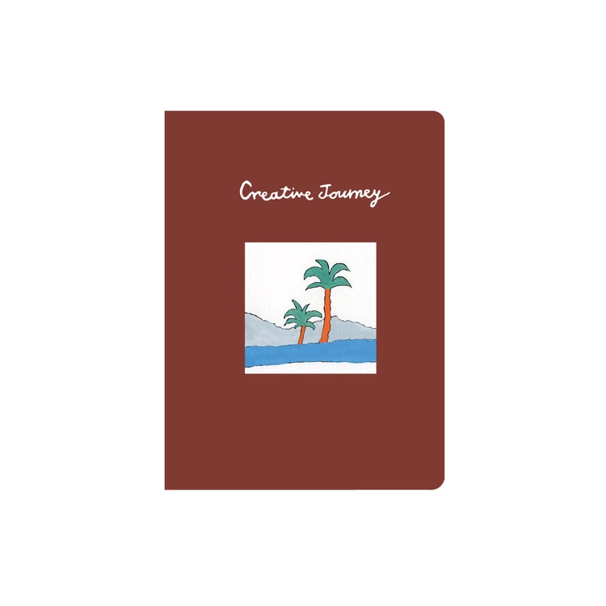
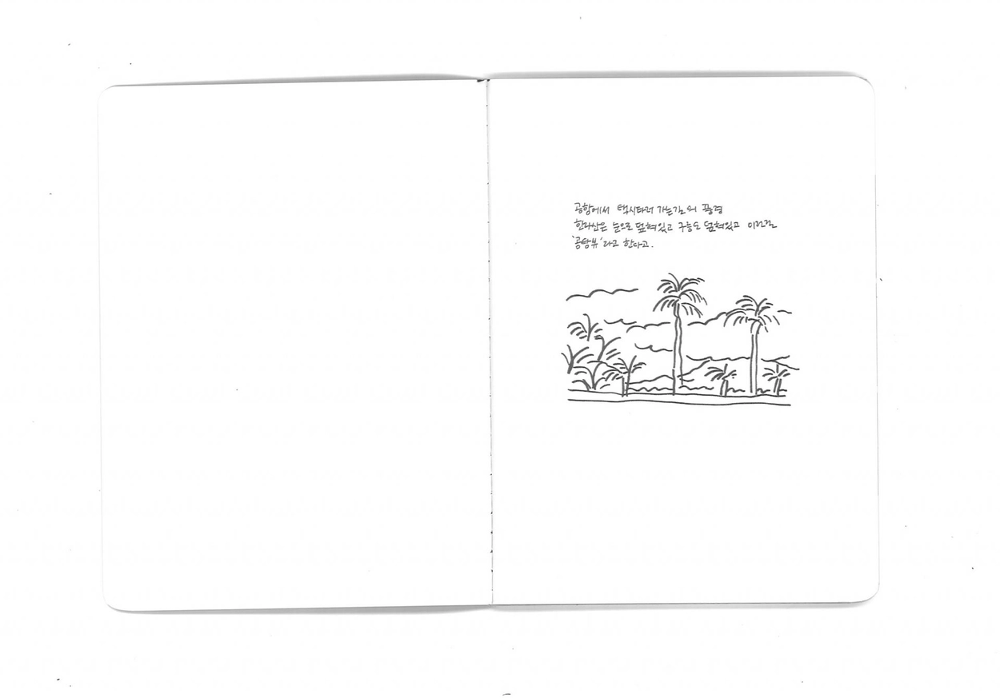
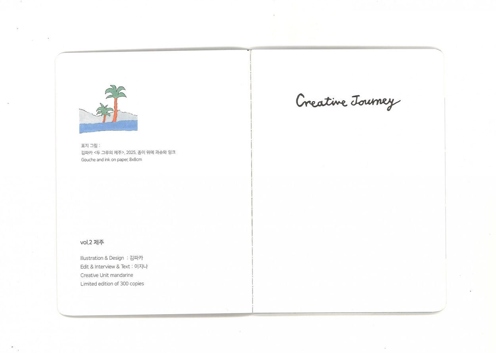
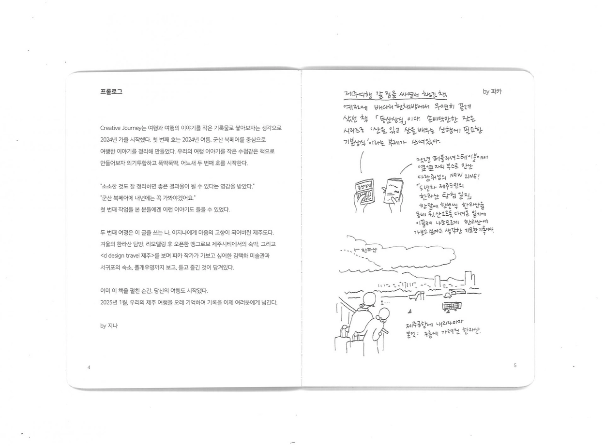
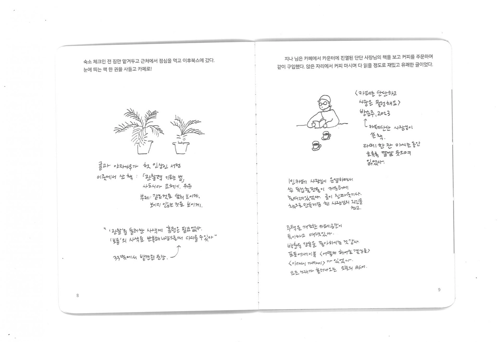
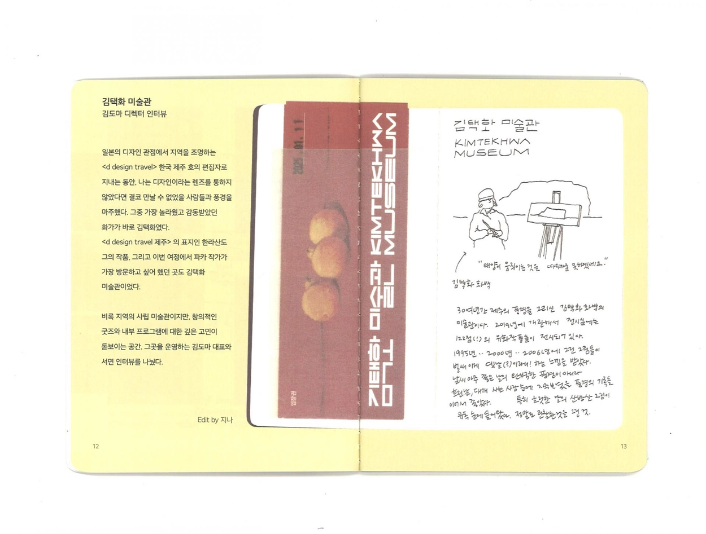
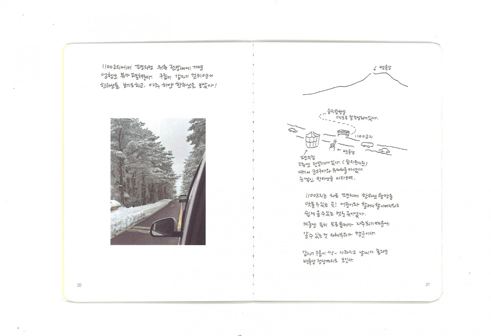
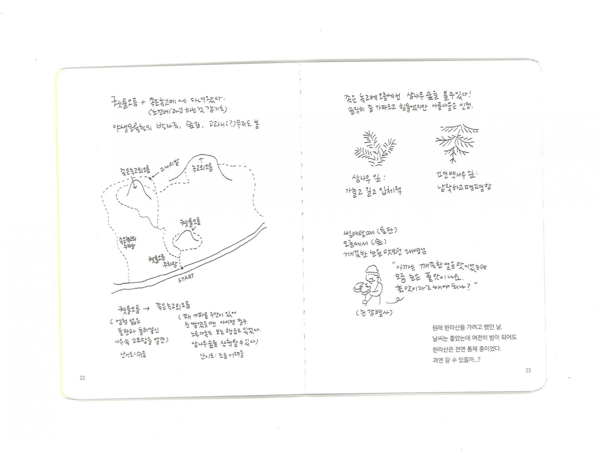
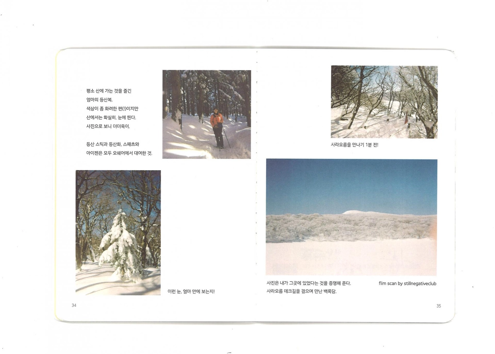
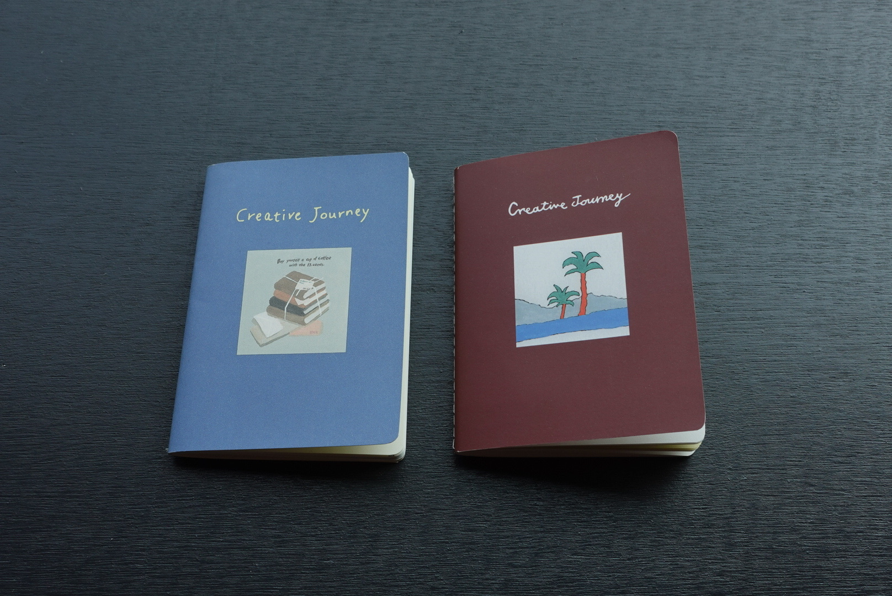
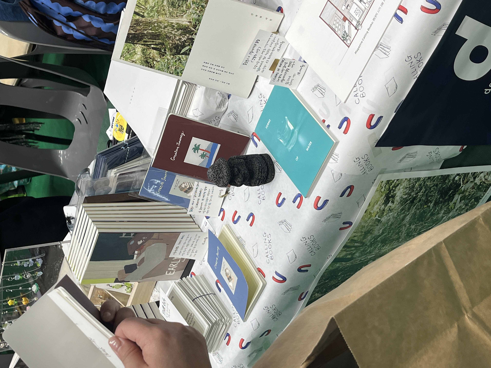
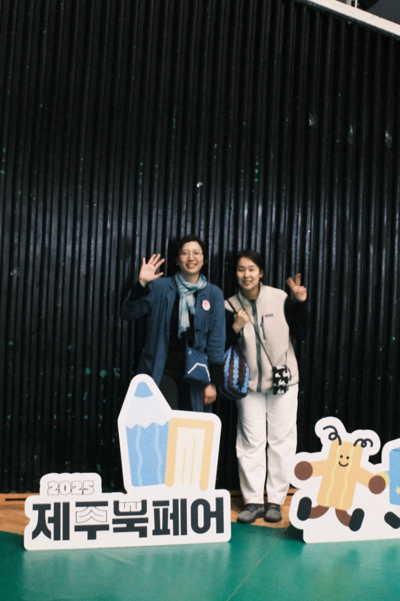
두 번째 Creative Journey vol.2는 겨울 제주탐방기에 대한 기록입니다. 수첩에 끄적인 기록들을 스캔한 것들, 여행에서 만난 사람들의 미니 인터뷰, 여행에서 생각한 것들, 여행의 방법 등 인상 깊은 내용과 생각들을 56페이지의 작은 수첩 사이즈로 구성하여 만들었습니다.
"매일 밤 틈틈이, 되도록 여행 중에 쓰는 것이 목표다. 잘 기록하고 싶은 마음에 미루다보면 아무것도 안 남는다는 걸 안다."
"'나무가지만 있어도, 잎만 봐도 무슨 나무인지 아는 사람이 되고 싶어요."
"산에 오르고 나면, 산에 대한 감사함은 물론 우리를 살게 하는 자연을 위해 인간으로서 무엇을 할 수 있을까, 자신의 자리에서 할 수 있는 일을 조금 더 찾아봐야지, 생각하게 된다."
목차 : 겨울 한라산에 가기까지 · 김택화 미술관 김도마 디렉터 인터뷰 · 한라산 탐방 일기 · 서귀포 여행의 목적지, 폴개우영 · 폴개우영 박민선 대표 인터뷰 · 여행의 장소들 · 손글씨로 쓴 에필로그
The second volume of Creative Journey documents a winter exploration of Jeju. Scanned notebook sketches, mini interviews with people met along the way, travel reflections, and impressions — all gathered into a 56-page, pocket-sized zine.
"My goal is to write a little each night — ideally while still on the trip. I know that if I put it off, wanting to record things properly, nothing will be left."
"'I want to become someone who can tell what kind of tree it is just from a branch, just from a leaf.'"
"After climbing a mountain, I find myself thinking not only of gratitude for the mountain itself, but of what I can do as a human being for the nature that keeps us alive — and that I should look a little harder for what I can do from where I stand. Whenever I visit Jeju, this thought always follows."
Contents: Getting to Hallasan in winter · Interview with Kim Doma, Director of Kim Taekhwa Art Museum · Hallasan hiking diary · Polgae Wooyeong, the destination in Seogwipo · Interview with Park Minseon, founder of Polgae Wooyeong · Places visited · Handwritten epilogue